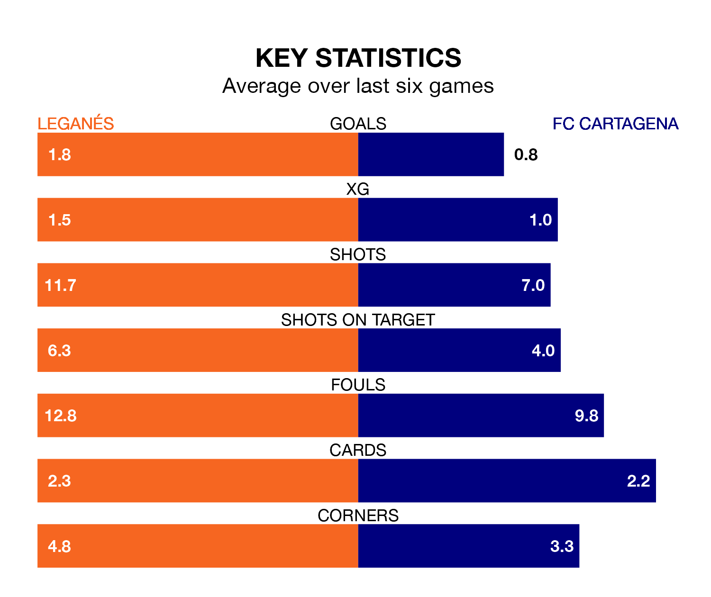

Leganés host FC Cartagena on Saturday at Estadio Municipal de Butarque in the Segunda División.
In their last league match, on March 17, Leganés beat Mirandés 4-0 at home, with goals from Diego García Campos (two), Juan Cruz and Miguel De La Fuente Escudero.
Cartagena drew, 0-0 away at CD Eldense on March 15.
Leganés are top of the table after 31 games, of which they have won 16 and drawn eight, earning 56 points.
Cartagena are 16 places behind the hosts in 17th, with nine wins and eight draws putting them on 35 points.
With 45 goals in 31 games so far this season, Leganés are scoring more than average in the league with 1.5 goals per game. And they are conceding fewer than average, letting in 20 goals at a rate of 0.6 per game.
The away side, meanwhile, are below average scorers, with 1.0 goal per game, compared to a league average of 1.1. They have conceded 1.4 goals per game.
With Diego Conde between the sticks, Leganés can rely on one of the league's safest pair of hands. He has kept 14 clean sheets in his 29 appearances this season, and only one other 'keeper – SD Huesca's Álvaro Fernández – has been able to prevent the opposition scoring on more occasions in the Segunda División.
In Cartagena's net, Marc Martínez Aranda has three clean sheets in 21 games. He has conceded a goal every 82 minutes, 70% more often than the 141 minutes between goals for Conde Alcolado.
In the last 10 years, Leganés and Cartagena have played each other on seven occasions. Leganés won three of them, Cartagena two, and they drew twice.
On average, Leganés scored 1.4 goals and Cartagena 1.0 in those matches.
Their last meeting was on November 5, when Leganés won 3-0 away.
The home team are in mixed form in the Segunda División, with three wins and a draw from their last six games.
And also with three wins and a draw over that period, Cartagena's form is identical – they have both taken 10 points from 18.
Updated: 10:19 (UTC), 22/03/24